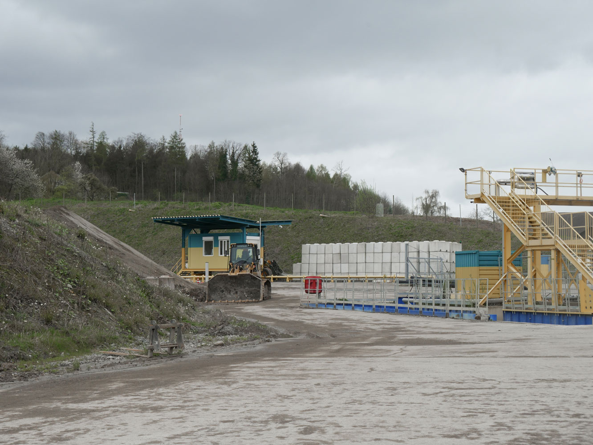

Shifting Ground
Tobias Gasser
Collage
Corridors
Model
1:500
To address this, the proposed project offers an alternative approach to managing the spread of invasive species in areas disturbed by human activities, highlighting the impact of the Anthropocene era on the understanding of nature. Inspired by Gilles Clément's “Jardin en mouvement,” this vision encompasses a dynamic space with ever-changing vegetation, where plants establish spontaneously and new ones arrive over time.
Studio Concrete Garden Spring 2024
Axonometric
1:150

Section
1:100
Neophytes are by definition plants that are not native and came to Switzerland after the discovery of America in 1492. Some of these plants grow invasive, meaning they have the potential to overgrow na- tive flora. Currently they are categorised and the most invasive of them are uprooted and dis- posed of in a special way. This process is very time-consuming and costly, and the plants often regrow the following year, making annual removal an unsustainable solu- tion. Many of these neophytes thrive because they can better withstand harsh conditions such as heat and drought compared to native plants. Additionally, they lack natural predators since many are poisonous to native fauna.
Studio Concrete Garden Spring 2024
Collage
Corridor
Model
1:500
Site
1:1000
Axonometric
1:150
Section
1:200
A landfill situated in the woods, such as the Chalberhau landfill, takes on a new light when we acknowledge the ongoing destruction of “natural landscapes” occurring to this day. To cling to the romantic vision of nature as an uncontaminated, pristine landscape, untouched by the human hand, is to ignore the fact that human actions have instigated long term transformations. It is imperative to understand the proposal as a process.
Studio Concrete Garden Spring 2024